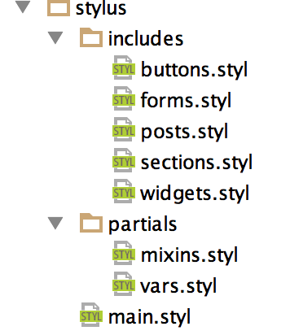
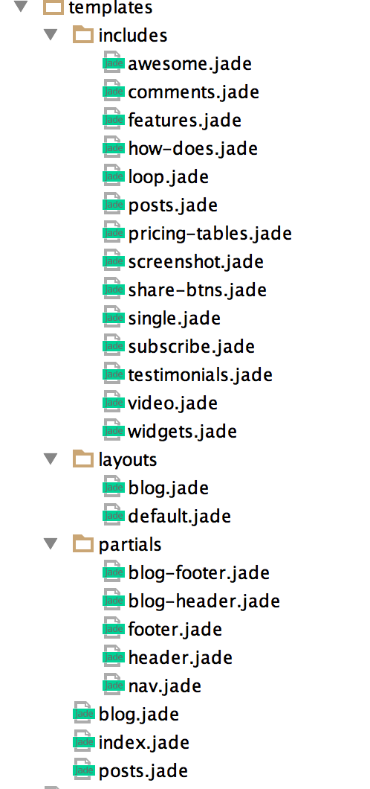

Thank you for purchasing our theme. If you have any questions that are beyond the scope of this help file, please feel free to email via the contact form here. Thanks you so much!
Welcome to Zollo V2. This new look at the template editing and configuration that will be interesting for both experienced developers and ordinary users. We offer you several ways and means that would make it.
Open your project
cd ./path_to_your_project/zollo-htmlIf you need install Gulp and Bower global
npm install gulp -gnpm install bower -gInstall dependencies
npm installInstall bower dependencies
bower installStart dev server
gulpOpen in your browser http://localhost:3000
We care for you, and setup livereload for you, don't wory about your changes, it should be apply at once
We used Stylus CSS preprocessor, documentation
Also we add some stylus libs like kouto swiss and Jeet grid
kouto swiss gives you a lot of mixins, functions and utilities to code faster, and include the power of caniuse website to make your stylesheets fits your compatibility needs.
Jeet is grid system for humans. Jeet allows you to express your page grid the same way a human would describe it. No more needlessly nesting elements. No more rigid twelve column rules. Enjoy building faster with less code, and more flexibility with Jeet.
Stylus files structure
// Variables for main stylesheet
ks-rem-base = 15px !default // Base size for rems
base-font-family = "Raleway" !default // Base font
main-color = #7f7e7e !default // Main text color
dark-color = #191919 !default // Color for headlines
primary-color = #37bbf9 !default // Color for link, buttons, etc.
light-gray = #f6f6f6 !default // Section gray bg, no-active
lighten-gray = #f9f9f9 !default
lighten-gray-2 = #eeeeee !default
section-title-color = #444444 !default // Section title color
container = 1200px !default // Web site width
gutter = 15px !default // Gutter for website container
navbar-height = 83px !default // Navbar size
navbar-bd-color = #fff !default // Fixed navbar background
navbar-text-color = #a6a6a6 !default // navbar links color
tag-color = #c6c6c6 !default // Color for tags in blog page
comment-bg-color = #e9e9e9 !default // Background for comments in blog page
// Responsive breakpoints
rupture.mobile-cutoff = mobile-cutoff = 460px !default // Mobile phones
rupture.tablet-cutoff = tablet-cutoff = 768px !default // Tablets
rupture.desktop-cutoff = desktop-cutoff = 1200px !default // Desktops
laptop-cutoff = 1440px !default // LaptopsUse section-var(bg-name, bg-url, text-color) in .bg-variant class
Example
&.bg-variant
section-var('one', '../images/section-bg-1.jpg', #fff)Open /assets/css/main.css and edit this file
We add Jade template engine for this template, it more useful and edible depends of simple HTML. You have a few files, that's compile to HTML. It's very useful.
Structure
Some main parts
Contact form will use php to send emails. So just open sendmail.php file. Change the current email spambox@designlab.co to your email address. Your form is ready.
Have questions? Please contact us.